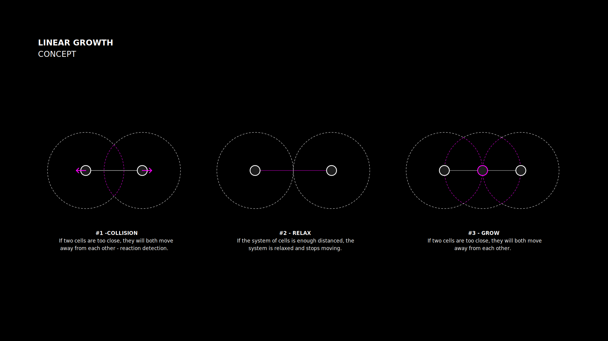

CURVE GROWTH
Curve growth is a specific use case of the differential growth algorithm in advanced geometry modeling, which mimics morphogenesis and is based on the natural growth of plant cells.
Differential growth is a deterministic algorithm to grow structured point clouds. Iteratively the algorithm is (1) relaxing and (2) inserting points to a point cloud. A NURBS-curve is a structure in computational geometry based on control points, which are interfaced by the differential growth algorithm and allow this geometry type to grow.
Differential growth is a deterministic algorithm to grow structured point clouds. Iteratively the algorithm is (1) relaxing and (2) inserting points to a point cloud. A NURBS-curve is a structure in computational geometry based on control points, which are interfaced by the differential growth algorithm and allow this geometry type to grow.
2022
The Bartlett School of Architecture, UCL (UK)
Morphogenetic Programming by Martha Tsigkari
Based on MIT media lab and ICD Stuttgart
The Bartlett School of Architecture, UCL (UK)
Morphogenetic Programming by Martha Tsigkari
Based on MIT media lab and ICD Stuttgart
Related - Master thesis
Related - Mesh Growth
